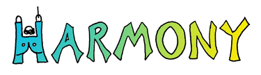

Demo: An extensive
set of live demos and tutorials on the features of Harmony can be found here.
Demo: An extensive
set of live demos and tutorials on the features of Harmony can be found here.

The Harmony system is a generic framework for reconciling disconnected updates to heterogeneous, replicated XML data. It can be used, for instance, to synchronize the bookmark files of several different web browsers, allowing bookmarks and bookmark folders to be added, deleted, edited, and reorganized by different users running different browser applications on disconnected machines.
A central theme of the Harmony project is bringing ideas from programming languages to bear on a set of problems more commonly regarded as belonging to the purview of databases or distributed systems. In particular, a major component of the proposed work concerns developing the foundations of bi-directional programming languages, in which every program denotes a pair of functions---one for extracting a view of some complex data structure, and another for ``putting back'' an updated view into the original structure. Bi-directional programs play a crucial role in the way the system deals with heterogeneous structures, mapping between diverse concrete application data formats and common abstract formats suitable for synchronization. Similarly, the issue of alignment during reconciliation---that is, of determining which parts of divergent replicas are intended to represent ``the same information''---can be addressed by focusing on the type structure of the data being reconciled.
Demo: An extensive
set of live demos and tutorials on the features of Harmony can be found here.
Source code distribution:
You can grab a source tarball from here.
Papers and talks:
see here
Current project members:
Past contributors:
Related projects:
The Harmony project is supported by the National Science Foundation under grants ITR-0113226, Principles and Practice of Synchronization and CPA-0429836, Harmony: The Art of Reconciliation.